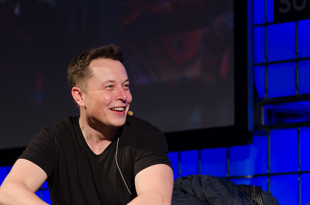

A brief look at
Elon Musk

Elon Musk at The Summit 2013
Some major life events for Musk:
- 1971 - Born in Pretoria, South Africa on June 28
- 1984 - Programmed and sold his first game, Blastar, at age 12
- 1989 - Enrolled in Queen's University in Canada at age 17 to avoid joining the military
- 1992 - Enrolled in the University of Pennsylvania, where he would obtain a bachelor's in economics and another in physics
- 1995 - Dropped out of Stanford after just 2 days to start his first company, Zip2 Corporation
- 1999 - Compaq bought Musk's company for $341 million (cash and stock options)
- 1999 - Co-founded X.com, the company that would later be known as PayPal
- 2002 - eBay bought PayPal for $1.5 billion in stock
- 2002 - Founded SpaceX
- 2003 - Founded Tesla Motors
- 2008 - NASA awarded SpaceX a contract to transport cargo to the International Space Station
- 2008 - Tesla released the Roadster, an all-electric sports car
- 2012 - SpaceX became first private company to send a spacecraft to the ISS
- 2017 - SpaceX successfuly flew and landed and rocket made from reusable parts
- 2017 - Tesla became the most valuable U.S. car company
For more details, check out his page at biography.com